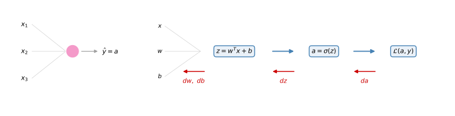
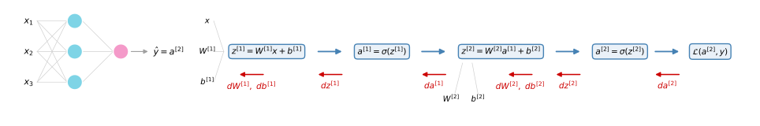

Gradient Descent for Neural Networks
deep-learning
neural-networks
backpropagation
gradient-descent
Backpropagation equations for a one hidden layer network, the intuition behind their derivation, and why weights must be initialized randomly.
The previous page built a neural network with one hidden layer and its forward pass. This page gives you the equations you need to implement in order to get backpropagation, that is, gradient descent, working for that network, then walks through the intuition behind where those equations come from, and closes with one last detail before you can train a network, why the weights must be initialized randomly.
Gradient Descent for Neural Networks
Your neural network with a single hidden layer has parameters \(W^{[1]}\), \(b^{[1]}\), \(W^{[2]}\), and \(b^{[2]}\). As a reminder, if you have \(n_x = n^{[0]}\) input features, \(n^{[1]}\) hidden units, and \(n^{[2]}\) output units (so far always \(n^{[2]} = 1\)), then
- \(W^{[1]}\) is \(n^{[1]} \times n^{[0]}\) and \(b^{[1]}\) is an \(n^{[1]} \times 1\) column vector,
- \(W^{[2]}\) is \(n^{[2]} \times n^{[1]}\) and \(b^{[2]}\) is \(n^{[2]} \times 1\).
Assuming binary classification, the cost function is the average of the same loss used for logistic regression,
\[ J\big(W^{[1]}, b^{[1]}, W^{[2]}, b^{[2]}\big) = \frac{1}{m} \sum_{i=1}^{m} \mathcal{L}\big(\hat{y}^{(i)}, y^{(i)}\big) \]
where \(\hat{y} = a^{[2]}\). To train the parameters you perform gradient descent. When training a neural network it is important to initialize the parameters randomly rather than to all zeros (the last section of this page explains why). After initializing, each loop of gradient descent computes the predictions \(\hat{y}^{(i)}\) for \(i = 1, \ldots, m\), then computes the derivatives \(dW^{[1]} = \frac{\partial J}{\partial W^{[1]}}\), \(db^{[1]} = \frac{\partial J}{\partial b^{[1]}}\), and similarly \(dW^{[2]}\) and \(db^{[2]}\), and then applies the updates
\[ W^{[1]} := W^{[1]} - \alpha \, dW^{[1]} \qquad b^{[1]} := b^{[1]} - \alpha \, db^{[1]} \qquad W^{[2]} := W^{[2]} - \alpha \, dW^{[2]} \qquad b^{[2]} := b^{[2]} - \alpha \, db^{[2]} \]
with learning rate \(\alpha\). That is one iteration, repeated some number of times until the parameters look like they are converging. The key is knowing how to compute the partial derivative terms.
Forward and Backward Equations
Recall from the previous page that lowercase \(g\) stands for whichever activation function a layer uses (sigmoid, tanh, or ReLU), and that capital letters like \(Z^{[1]}\) and \(A^{[1]}\) are just the single-example versions stacked into columns across the whole training set. Summarizing forward propagation with those two conventions, and \(g^{[2]} = \sigma\) for binary classification,
\[ Z^{[1]} = W^{[1]} X + b^{[1]} \qquad A^{[1]} = g^{[1]}\big(Z^{[1]}\big) \qquad Z^{[2]} = W^{[2]} A^{[1]} + b^{[2]} \qquad A^{[2]} = g^{[2]}\big(Z^{[2]}\big) \]
Backpropagation then computes the derivatives with these six equations, where \(Y\) is the \(1 \times m\) matrix of labels stacked horizontally,
\[ dZ^{[2]} = A^{[2]} - Y \]
\[ dW^{[2]} = \frac{1}{m} \, dZ^{[2]} A^{[1]\,T} \qquad db^{[2]} = \frac{1}{m} \, \texttt{np.sum}\big(dZ^{[2]}\text{, axis=1, keepdims=True}\big) \]
\[ dZ^{[1]} = W^{[2]\,T} dZ^{[2]} \;*\; g^{[1]\prime}\big(Z^{[1]}\big) \]
\[ dW^{[1]} = \frac{1}{m} \, dZ^{[1]} X^{T} \qquad db^{[1]} = \frac{1}{m} \, \texttt{np.sum}\big(dZ^{[1]}\text{, axis=1, keepdims=True}\big) \]
A few implementation notes.
- The first three equations are very similar to gradient descent for logistic regression. The sigmoid output activation is already baked into \(dZ^{[2]} = A^{[2]} - Y\).
np.sum(..., axis=1, keepdims=True)sums horizontally across one dimension of the matrix. Thekeepdims=Trueprevents Python from outputting one of those funny rank 1 arrays of shape(n,), ensuringdbcomes out as an \(n \times 1\) vector. For \(db^{[2]}\) with \(n^{[2]} = 1\) the result is one by one, so it matters less, but \(db^{[1]}\) is \(n^{[1]} \times 1\) and a rank 1 array there could mess up later calculations. (The alternative is to explicitlyreshapethe output ofnp.suminto the dimension you want.)- In the \(dZ^{[1]}\) equation, the \(*\) is an element-wise product. \(W^{[2]\,T} dZ^{[2]}\) is an \(n^{[1]} \times m\) matrix, and \(g^{[1]\prime}(Z^{[1]})\), the derivative of the hidden activation function applied element-wise, is also \(n^{[1]} \times m\), so the two multiply entry by entry.
If you implement these equations, you will have a correct implementation of forward prop and backprop, able to compute the derivatives you need to apply gradient descent and learn the parameters of your network. It is possible to implement this and get it to work without deeply understanding the calculus, and a lot of successful deep learning practitioners do so. The next section, which is optional, goes into the intuitions behind how the six equations were derived.
Review Questions
1. For a network with \(n^{[0]}\) inputs, \(n^{[1]}\) hidden units, and \(n^{[2]}\) outputs, what are the shapes of the four parameters?
TipAnswer
\(W^{[1]}\) is \(n^{[1]} \times n^{[0]}\), \(b^{[1]}\) is \(n^{[1]} \times 1\), \(W^{[2]}\) is \(n^{[2]} \times n^{[1]}\), and \(b^{[2]}\) is \(n^{[2]} \times 1\).
1. Write the six backpropagation equations for the one hidden layer network.
TipAnswer
\[ dZ^{[2]} = A^{[2]} - Y \qquad dW^{[2]} = \frac{1}{m} dZ^{[2]} A^{[1]T} \qquad db^{[2]} = \frac{1}{m}\, \texttt{np.sum}\big(dZ^{[2]}, \text{axis=1, keepdims=True}\big) \] \[ dZ^{[1]} = W^{[2]T} dZ^{[2]} * g^{[1]\prime}\big(Z^{[1]}\big) \qquad dW^{[1]} = \frac{1}{m} dZ^{[1]} X^{T} \qquad db^{[1]} = \frac{1}{m}\, \texttt{np.sum}\big(dZ^{[1]}, \text{axis=1, keepdims=True}\big) \] where \(*\) is the element-wise product.
1. What does keepdims=True do in the db computations, and why does it matter more for \(db^{[1]}\) than for \(db^{[2]}\)?
TipAnswer
It stops NumPy from returning a rank 1 array of shape (n,), forcing an \(n \times 1\) column instead. For \(db^{[2]}\) the result is \(1 \times 1\), just a number, so the distinction hardly matters, but \(db^{[1]}\) is \(n^{[1]} \times 1\), and a rank 1 array there can silently break later matrix calculations.
1. In \(dZ^{[1]} = W^{[2]T} dZ^{[2]} * g^{[1]\prime}(Z^{[1]})\), what kind of product is \(*\), and what are the dimensions of the two factors?
TipAnswer
An element-wise product. Both \(W^{[2]T} dZ^{[2]}\) and \(g^{[1]\prime}(Z^{[1]})\) are \(n^{[1]} \times m\) matrices, so they are multiplied entry by entry.
1. Consider the following code. What will y.shape be?
x = np.random.rand(3, 2)
y = np.sum(x, axis=0, keepdims=True)(1, 2)(3, 1)(3,)(2,)
TipAnswer
a. With axis=0 the sum is computed down each column of the array, so a \(3 \times 2\) input collapses to one row of 2 entries. Because keepdims=True is used, the summed-out dimension is kept with size 1 instead of disappearing, so the result is (1, 2) rather than a rank 1 array of shape (2,).
Backpropagation Intuition (Optional)
This section is completely optional. It goes over the intuition, using the computation graph, for how the six equations were derived. You will be able to do everything that follows either way.
One Neuron Recap: Logistic Regression
Recall that for logistic regression the forward pass computed \(z\), then \(a\), then the loss, and the backward pass computed \(da\), then \(dz\), then \(dw\) and \(db\), the same node as the top row of the earlier diagram, drawn again here on its own, forward pass in blue and backward pass in red.
With the loss \(\mathcal{L}(a, y) = -y \log a - (1 - y)\log(1 - a)\), taking the derivative with respect to \(a\) gives
\[ da = -\frac{y}{a} + \frac{1 - y}{1 - a} \]
and one step further back,
\[ dz = a - y \]
NoteAside: Where \(dz = da \cdot g'(z)\) Comes From
For those familiar with the chain rule of calculus, the reason is that \(a = \sigma(z)\), so \[ \frac{\partial \mathcal{L}}{\partial z} = \frac{\partial \mathcal{L}}{\partial a} \cdot \frac{da}{dz} = da \cdot g'(z) \] With \(g = \sigma\), \(g'(z) = a(1-a)\), and multiplying that by the \(da\) expression above simplifies to \(a - y\), as shown in the cost function justification. If the chain rule is unfamiliar, do not worry about it.
Finally, for a single training example, \(dw = dz \cdot x\) and \(db = dz\). That was logistic regression: one step of \(z, a\) forward, and \(da, dz, dw, db\) backward.
Same Calculation, Done Twice
Backpropagation for a neural network is a calculation a lot like this, done twice, because \(x\) now feeds a hidden layer which feeds the output unit. The forward steps are \(z^{[1]}\), then \(a^{[1]}\), then \(z^{[2]}\) (which also depends on \(W^{[2]}\) and \(b^{[2]}\)), then \(a^{[2]}\), then the loss. Backpropagation goes backward, computing \(da^{[2]}\), then \(dz^{[2]}\), then \(dW^{[2]}\), \(db^{[2]}\), then \(da^{[1]}\), \(dz^{[1]}\), and finally \(dW^{[1]}\), \(db^{[1]}\). (We do not take derivatives with respect to the input \(x\), since for supervised learning we are not trying to optimize \(x\).)

In practice, the computation of \(da^{[2]}\) and \(dz^{[2]}\) collapses into one step, exactly as for logistic regression,
\[ dz^{[2]} = a^{[2]} - y \qquad dW^{[2]} = dz^{[2]} \, a^{[1]\,T} \qquad db^{[2]} = dz^{[2]} \]
The \(dW^{[2]}\) step is quite similar to logistic regression, where \(dw = dz \cdot x\), except that now \(a^{[1]}\) plays the role of \(x\) and there is an extra transpose. The reason is that the matrix \(W^{[2]}\) is a row vector, related to the logistic regression column vector \(w\) by a transpose, so the formula picks up a transpose too.
Continuing backward, the computations of \(da^{[1]}\) and \(dz^{[1]}\) also collapse into one step,
\[ dz^{[1]} = W^{[2]\,T} dz^{[2]} \;*\; g^{[1]\prime}\big(z^{[1]}\big) \]
and finally
\[ dW^{[1]} = dz^{[1]} \, x^{T} \qquad db^{[1]} = dz^{[1]} \]
You might notice the similarity between the layer 2 and layer 1 formulas. That is no coincidence, since \(x\) plays the role of \(a^{[0]}\), so \(x^T\) is \(a^{[0]\,T}\), and the equations really are the same pattern shifted down one layer.
Checking the Dimensions
Here is one tip when implementing backprop. If you make sure the dimensions of your matrices match up, thinking through the dimensions of \(W^{[1]}, W^{[2]}, z^{[1]}, z^{[2]}, a^{[1]}, a^{[2]}\), that alone eliminates a lot of bugs. For the \(dz^{[1]}\) equation, with \(n^{[0]}\) features, \(n^{[1]}\) hidden units, and \(n^{[2]} = 1\) output,
- \(W^{[2]}\) is \(n^{[2]} \times n^{[1]}\), so \(W^{[2]\,T}\) is \(n^{[1]} \times n^{[2]}\),
- \(dz^{[2]}\) is \(n^{[2]} \times 1\) (one by one for binary classification), so \(W^{[2]\,T} dz^{[2]}\) is \(n^{[1]} \times 1\),
- \(g^{[1]\prime}(z^{[1]})\) has the same dimensions as \(z^{[1]}\), which is \(n^{[1]} \times 1\),
so the element-wise product of two \(n^{[1]} \times 1\) vectors makes sense, and \(dz^{[1]}\) comes out \(n^{[1]} \times 1\). A useful general fact: for any variable foo, dfoo always has the same dimensions as foo. That is why \(W\) and \(dW\) always have the same dimension, and similarly for \(b\) and \(db\), and \(z\) and \(dz\).
Vectorizing Across the Training Set
So far this derivation trains on a single example at a time. To vectorize, we stack the \(z\) values of different training examples as the columns of capital matrices, exactly as in the forward pass. It turns out that if you go through the math carefully, the same trick works for backpropagation, giving the vectorized equations
\[ dZ^{[2]} = A^{[2]} - Y \qquad dW^{[2]} = \frac{1}{m} dZ^{[2]} A^{[1]\,T} \qquad db^{[2]} = \frac{1}{m}\, \texttt{np.sum}\big(dZ^{[2]}, \text{axis=1, keepdims=True}\big) \]
\[ dZ^{[1]} = W^{[2]\,T} dZ^{[2]} \;*\; g^{[1]\prime}\big(Z^{[1]}\big) \qquad dW^{[1]} = \frac{1}{m} dZ^{[1]} X^{T} \qquad db^{[1]} = \frac{1}{m}\, \texttt{np.sum}\big(dZ^{[1]}, \text{axis=1, keepdims=True}\big) \]
The extra \(\frac{1}{m}\) appears because the cost \(J\) is \(\frac{1}{m}\) times the sum of the per-example losses, so the derivatives inherit the same factor, just as they did for logistic regression. Note that in the vectorized \(dZ^{[1]}\) equation, both factors of the element-wise product are now \(n^{[1]} \times m\) matrices rather than vectors.
The derivation of the backpropagation algorithm is actually one of the most complicated pieces of math in all of machine learning. Deriving it from scratch from first principles requires both linear algebra and matrix derivatives, and if you are an expert in matrix calculus, you can try it yourself. But plenty of deep learning practitioners have seen the derivation at about the level of this section, have all the right intuitions, and implement the algorithm very effectively.
Review Questions
1. Why does the formula \(dW^{[2]} = dz^{[2]} a^{[1]T}\) carry a transpose where the logistic regression formula \(dw = dz \cdot x\) did not?
TipAnswer
Because \(W^{[2]}\) is a row vector (a \(1 \times n^{[1]}\) matrix), while the logistic regression parameter \(w\) was a column vector. The transpose on \(a^{[1]}\) makes the dimensions of \(dW^{[2]}\) match those of \(W^{[2]}\), and \(a^{[1]}\) plays the role that \(x\) played before.
1. What is the dimension-checking rule relating any variable foo and its derivative dfoo, and how does it help?
TipAnswer
dfoo always has the same dimensions as foo, so \(W\) and \(dW\), \(b\) and \(db\), \(z\) and \(dz\) all match. Verifying that every matrix operation in backprop produces the dimensions it must, like \(dz^{[1]}\) coming out \(n^{[1]} \times 1\), eliminates a lot of implementation bugs before they happen.
1. Where does the \(\frac{1}{m}\) factor in the vectorized \(dW\) and \(db\) equations come from?
TipAnswer
The cost \(J\) is \(\frac{1}{m}\) times the sum of the per-example losses, so its derivatives carry the same \(\frac{1}{m}\), exactly as in the vectorized gradient computation for logistic regression.
1. Which two pairs of backward steps collapse into single steps in practice?
TipAnswer
\(da^{[2]}\) and \(dz^{[2]}\) collapse into \(dz^{[2]} = a^{[2]} - y\), and \(da^{[1]}\) and \(dz^{[1]}\) collapse into \(dz^{[1]} = W^{[2]T} dz^{[2]} * g^{[1]\prime}(z^{[1]})\).
Random Initialization
When you train your neural network, it is important to initialize the weights randomly. For logistic regression it was okay to initialize the weights to zero, but for a neural network, initializing all the weights to zero and then applying gradient descent will not work. Let us see why.
Take a small network with two input features (\(n^{[0]} = 2\)) and two hidden units (\(n^{[1]} = 2\)), so \(W^{[1]}\) is a \(2 \times 2\) matrix. Say you initialize it to all zeros, and \(b^{[1]}\) to zeros too. (It turns out initializing the bias terms to 0 is actually okay; it is the zero weights that cause the problem.) Then for any example you give the network, the two hidden activations \(a^{[1]}_1\) and \(a^{[1]}_2\) will be equal, because both hidden units compute exactly the same function of the inputs. When you compute backpropagation, \(dz^{[1]}_1\) and \(dz^{[1]}_2\) turn out to be the same as well, by symmetry (assuming the outgoing weights \(W^{[2]}\) are also initialized identically, say to zeros). Both hidden units are completely symmetric: they compute exactly the same function, and the weight update \(dW^{[1]}\) works out to a matrix whose rows are all equal.
So after the update \(W^{[1]} := W^{[1]} - \alpha \, dW^{[1]}\), the first row of \(W^{[1]}\) still equals the second row. By a proof by induction, after every single iteration of training, the two hidden units are still computing exactly the same function. No matter how long you train, the symmetry never breaks, so there is really no point in having more than one hidden unit: they all compute the same thing. The same argument works for larger networks, with more features and a very large number of hidden units. If the weights start at zero, all hidden units are symmetric and remain so forever, and you want different hidden units to compute different functions.
Solution: Small Random Values
The solution is to initialize the parameters randomly,
W1 = np.random.randn(2, 2) * 0.01
b1 = np.zeros((2, 1))
W2 = np.random.randn(1, 2) * 0.01
b2 = 0np.random.randn generates Gaussian random values, which you then multiply by a very small number such as 0.01, so the weights start at very small random values. The bias \(b\) does not have the symmetry problem (what is called the symmetry breaking problem), so it is fine to initialize \(b\) to zeros. As long as \(W\) is random, the hidden units start off computing different things.
Why multiply by 0.01 and not, say, 100? We usually prefer very small initial weights. If you are using a tanh or sigmoid activation anywhere (even just a sigmoid output layer), then large weights make \(z^{[1]} = W^{[1]} x + b^{[1]}\) large (or very negative), landing you on the flat, saturated parts of the tanh or sigmoid curve where the slope is tiny, so gradient descent is very slow and learning is very slow. With no sigmoid or tanh anywhere in the network this is less of an issue, but for binary classification with a sigmoid output, you just do not want the initial parameters too large.
Finally, sometimes there can be better constants than 0.01. For a shallow network with one hidden layer, 0.01 works okay. When training a very deep network, you might want to pick a different constant, still a relatively small number, and the next part of the course says a little about how to choose it.
You now know how to set up a neural network with a hidden layer, initialize the parameters, make predictions, compute derivatives, and implement gradient descent using backprop.
Review Questions
1. Why does initializing all weights to zero break a neural network but not logistic regression?
TipAnswer
Logistic regression has no hidden units, so there is nothing to become symmetric. In a neural network, zero weights make every hidden unit compute exactly the same function, and by symmetry their gradients are identical too, so after every gradient descent update the units remain identical forever. Multiple hidden units then add nothing.
1. Which parameters can safely be initialized to zero, and which cannot?
TipAnswer
The bias vectors \(b^{[1]}, b^{[2]}\) can be zeros, since they do not cause the symmetry problem. The weight matrices \(W^{[1]}, W^{[2]}\) must be initialized to small random values so different hidden units start off computing different functions.
1. Why are the random initial weights multiplied by a small constant like 0.01?
TipAnswer
Large weights produce large values of \(z\), which land on the flat, saturated parts of tanh or sigmoid activations where the slope is nearly zero, making gradient descent, and therefore learning, very slow. Small initial weights keep \(z\) in the region where these activations still have a healthy slope.
1. Is 0.01 always the right scaling constant?
TipAnswer
No. It works okay for a shallow network with one hidden layer, but for very deep networks a different (still small) constant can be better. How to choose it is covered later in the specialization.
1. Suppose you have built a neural network with one hidden layer and tanh as the activation function for the hidden layer. You decide to initialize the weights to small random numbers and the biases to zero. The first hidden layer’s neurons will perform different computations from each other even in the first iteration. True or False?
TipAnswer
True. Since the random weights are almost surely different from each other, each neuron computes a different function of the inputs from the very first iteration. That is exactly what random initialization buys you, and the zero biases do not reintroduce the symmetry.
1. Logistic regression’s weights \(w\) should be initialized randomly rather than to all zeros, because if you initialize to all zeros, then logistic regression will fail to learn a useful decision boundary because it will fail to break symmetry. True or False?
TipAnswer
False. Logistic regression has no hidden layer, so there is no symmetry to break. With zero weights the first prediction is 0.5, but the derivatives depend on the input \(x\), which is not zero, so the weights already differ from each other after the first gradient descent update and the model trains just fine.